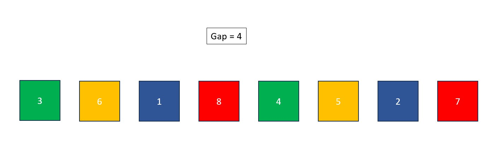
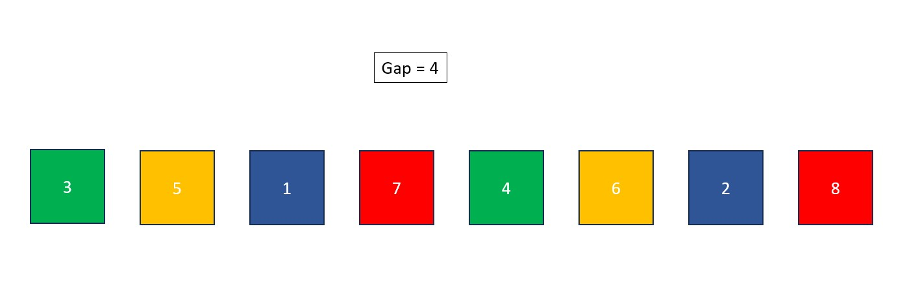
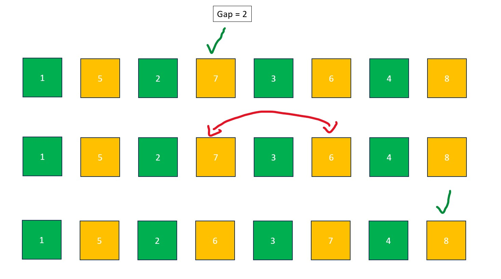

Procedure for ASCENDING Shell Sort:
- Divide the length of the list by 2 in order to find the initial gap size. If the resulting number is a decimal, round it down to the nearest whole number. After finding the gap size, correlate all elements that are [insert gap size] apart from each other.
Note: If the list below had an additional element at the end, it would be marked as part of the green group.

- If any of the corresponding elements are out of order, swap them (insertion sort).
- Divide the gap size by 2 again. If the resulting number is a decimal, round it down to the nearest whole number. After finding the gap size, correlate all elements that are [insert gap size] apart from each other. Perform an insertion sort on each of the correlated lists (shared colors) so that they are in the correct order.
- Repeat step 3. Now that the gap size is 1, a basic insertion sort is performed and then the data is guaranteed to be sorted.



(Insertion Sort)

Fun Fact #1: It is considered usual to choose your own gap size sequence for shell sort rather than just dividing by 2 every round. This could potentially improve the speed of the algorithm. A common choice is the Knuth Sequence, where the expression (3^k-1)/2 (k = the round you are in) dictates the gap size until the result exceeds the length of the data being sorted.
Fun Fact #2: Shell sort isn't named after a shell to describe its sorting strategy, it's named after the algorithm's inventor Donald Shell.